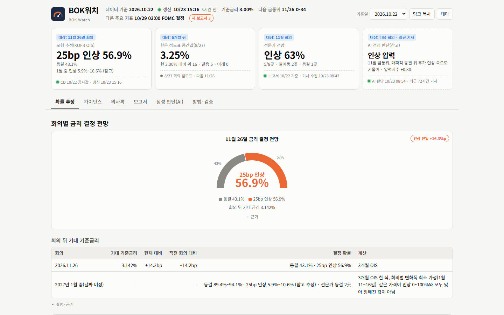
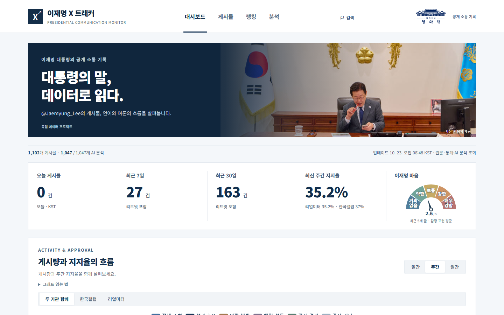
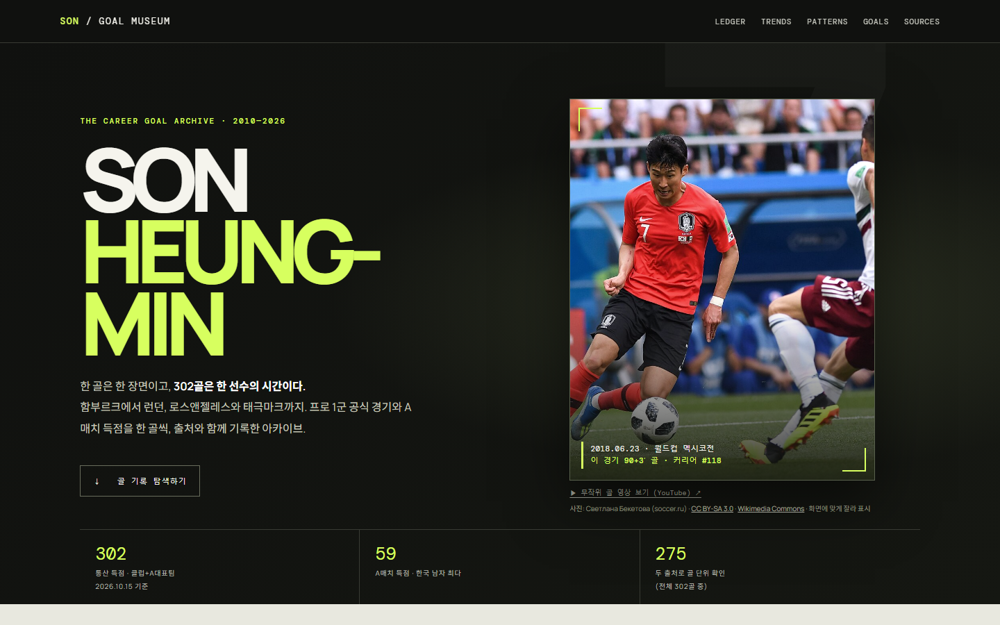
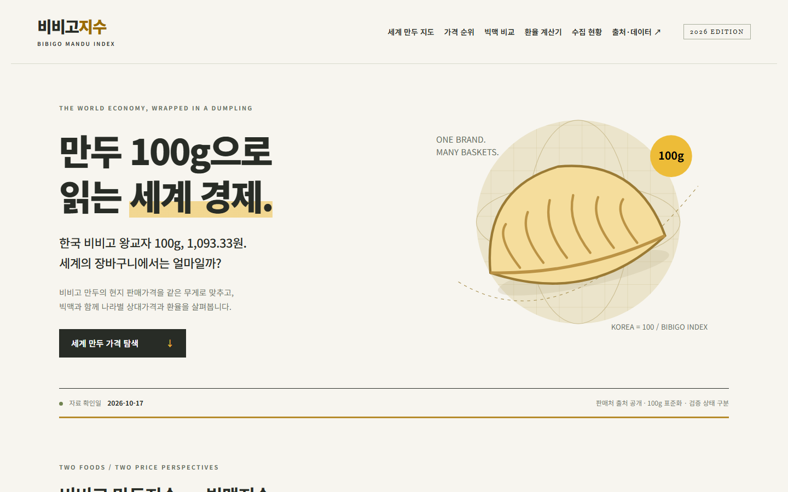
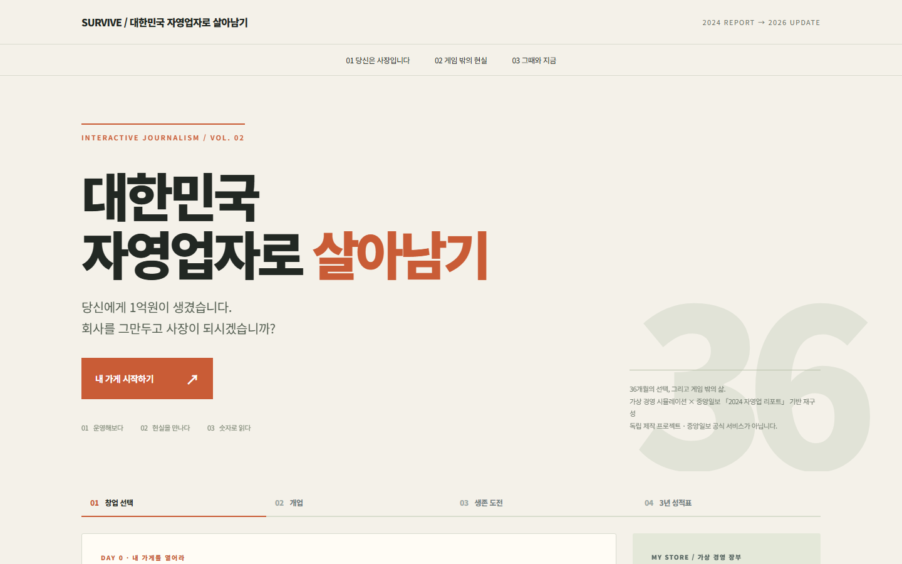
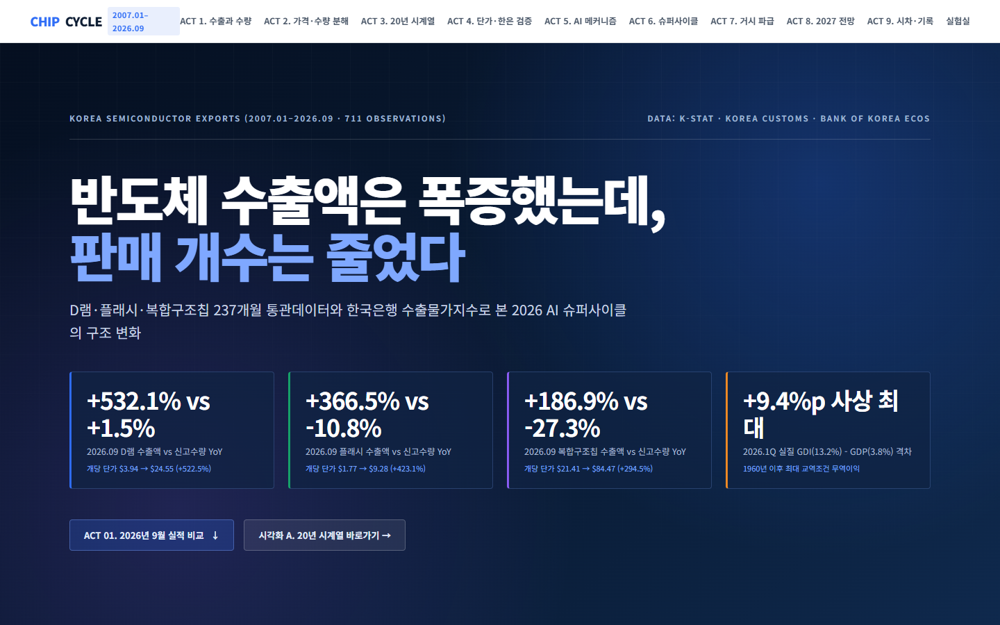
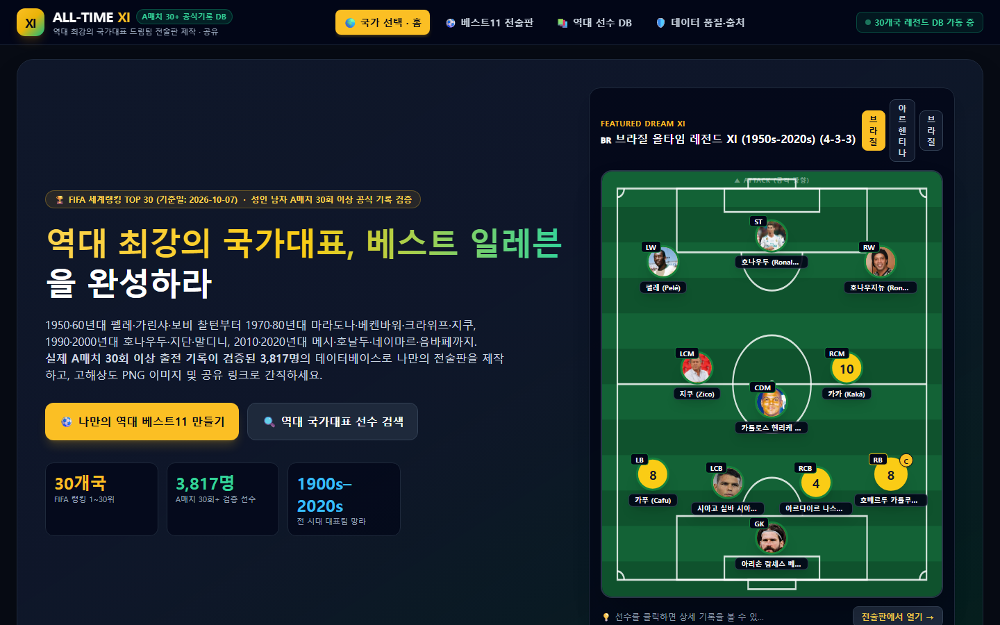
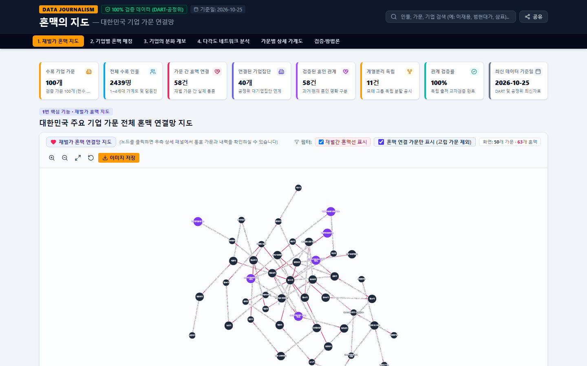

공개DATA경제
BOK워치
한국은행 금통위 금리 결정 모니터. KOFR 선물·OIS에서 역산한 모형 확률, 총재 발언, 의사록, 전문가 전망을 한 화면에서 봅니다.
다음 금통위까지 동결·인상 확률이 어떻게 움직이는지 날짜별로 추적할 수 있습니다.
독립 데이터저널리즘 프로젝트
:사실은 진하다
데이터로 내린 풍미깊은 뉴스
기자가 AI로 만든 데이터 저널리즘 프로젝트 13개. 데이터를 탐색하고(DATA),
직접 경험하며(EXPERIENCE), 기록과 지식을 쌓아 간다(INTELLIGENCE).
모든 프로젝트는 서로 이어져 있습니다.

한국은행 금통위 금리 결정 모니터. KOFR 선물·OIS에서 역산한 모형 확률, 총재 발언, 의사록, 전문가 전망을 한 화면에서 봅니다.
다음 금통위까지 동결·인상 확률이 어떻게 움직이는지 날짜별로 추적할 수 있습니다.

대통령의 X 게시물과 반응, 언어와 여론의 흐름을 지지율과 함께 봅니다.
게시물 1,065건을 AI로 분류해 주제와 감정 표현의 변화를 짚어 냅니다.
국회의원 의정활동 감시자
법안 발의와 표결, 회의 발언 같은 의정 기록을 한곳에 정리합니다.

프로 1군 공식 경기와 A매치에서 넣은 302골을 한 골씩, 출처와 함께 기록한 아카이브입니다.
시즌별 추이, 득점 시간대와 발·머리, 슈팅 위치와 xG, 개별 골 영상까지 필터로 찾아볼 수 있습니다.

노벨 경제학상 수상자 101명의 연구와 대표 저작으로 세계경제를 설명해 온 이론과 방법을 살펴봅니다.
입문 설명에서 출발해 논문의 가정과 식별전략까지 원하는 깊이로 읽을 수 있습니다.

추신수·강정호·이대호·이승엽, 그리고 김도영. 다섯 타자의 공식 기록으로 한국 야구 타자의 세대교체를 봅니다.
MLB·NPB 기록을 KBO 기준으로 환산해 연차별로 나란히 비교하고, 원 기록으로도 바꿔 볼 수 있습니다.

비비고 만두 100g의 나라별 판매가격을 빅맥과 함께 비교해 세계 물가와 환율을 읽습니다.
세계 만두 지도와 가격 순위, 구매력평가 환율 추정까지 판매처 출처와 수집일을 공개합니다.

한국 자영업자의 창업과 경영을 체험하는 36개월 시뮬레이션.
업종과 상권을 고르고, 임대료·인건비·매출 조건을 설정해 가게를 직접 운영해 봅니다.

반도체 수출액은 폭증했는데 판매 개수는 줄었다. 한국 반도체 수출 20년을 통관데이터로 추적합니다.
D램·플래시·복합구조칩 237개월 기록과 한국은행 수출물가지수로 AI 슈퍼사이클의 구조를 읽습니다.

대한민국은 세계 몇 등일까. 우리가 생각하는 한국과 숫자가 보여주는 한국이 얼마나 다른지 확인합니다.
World Bank·OECD·UN 등 공식 통계 53개 지표, 28문항 퀴즈, 50년 시계열로 세계지도와 순위를 탐색합니다.

역대 최강의 국가대표를 만들어라. 나라별 역대 선수로 드림팀 전술판을 짜고 공유합니다.
A매치 30경기 이상 출전 선수 3,864명의 공식 기록으로 FIFA 랭킹 상위 30개국 + 한국의 베스트11을 구성합니다.

지난 3년, 가장 좋아진 기업은? 가장 큰 기업이 아니라 가장 크게 달라진 기업을 찾습니다.
OpenDART 공시 재무제표로 성장성·수익성·재무건전성·현금창출력의 변화를 측정하고, 체력과 모멘텀을 지도 위에 올려 봅니다.

대한민국 기업 가문 연결망. 재벌가의 혼맥과 계열분리 계보를 한 장의 지도로 봅니다.
공시·공정위 자료로 교차검증한 100개 가문, 2,439명의 가계도와 가문 간 혼맥 58건을 탐색합니다.